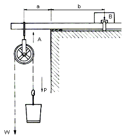
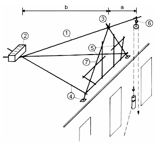
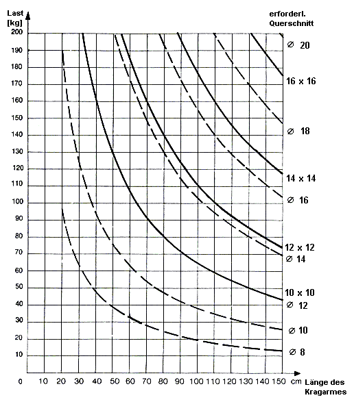
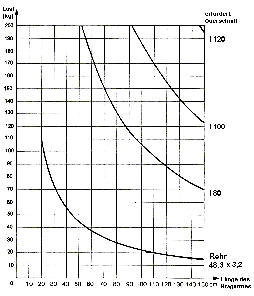
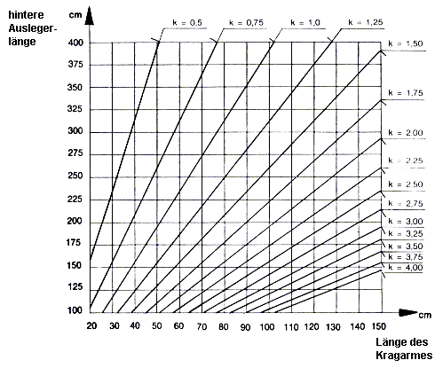
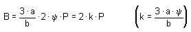

Berechnungsgrundlagen für Regelausführungen von Seilrollenaufzügen und Rahmenstützenaufzügen mit Ausleger bis zu einer Tragfähigkeit von 200 kg
1 Regelausführung für einen Seilrollenaufzug

| Kräfte u. Momente | Gleichgewicht |
| W | P |
| A | 2P |
| Mr max | 2 P · a |
| Mb max | 2 P · a · ψ |
| B | a · A b |
| Mr max | = | größtes Biegemoment am gefährdeten Querschnitt des Auslegers in Ruhe |
| Mb max | = | größtes Biegemoment am gefährdeten Querschnitt des Auslegers in Betrieb |
| P | = | zu ziehende Last |
| W | = | erforderliche Windenzugkraft |
| a | = | Kraglänge des Auslegers |
| b | = | hintere Auslegerlänge |
| B | = | Ankerzugkraft bzw. Ballastgewicht |
| ψ | = | Hublastbeiwert |
Der Träger ist unter Berücksichtigung der zu erwartenden Höchstlast, die mit einem Hublastbeiwert zu vervielfältigen ist, statisch zu berechnen. Für das an der Dach- oder Deckenkante auftretende ungünstigste Moment, das für die Bemessung des Auslegerquerschnittes entscheidend ist, gilt folgende Formel:
Mmax = 2 · ψ · P · a
Hierin ist als Hublastbeiwert zur Aufnahme dynamischer Beanspruchungen nach DIN 15018 anzusetzen:
ψ = 1,3
Unter Zugrundelegung dieser Lastannahmen sind in den Tafeln 1 und 2 die erforderlichen Auslegerquerschnitte für hölzerne und stählerne Ausleger in Abhängigkeit von der zu ziehenden Last bzw. der Auslegerlänge angegeben.
Die Befestigung des Kragträgers ist von den jeweiligen örtlichen Verhältnissen und arbeitstechnischen Gründen abhängig, dabei ist der Träger gegen Abkippen über sein vorderes Auflager zu sichern. Ist eine Verankerung mit Stahlbügeln oder Ähnlichem an festen Bauteilen nicht möglich, muss an dem rückwärtigen Ende des Kragträgers ein Gegengewicht (Ballast) angebracht werden. Die Ankerzugkraft bzw. das Ballastgewicht muss mindestens eine 3fache Sicherheit gegen Abkippen bieten (Tafel 3). Der Ballast ist fest mit dem Kragträger zu verbinden (zum Beispiel ausreichend groß bemessener Kasten zum Einlagern des Ballastes; keine losen Steine, Papprollen oder ähnliches auf das Trägerende auflegen!).
2 Regelausführung für einen Rahmenstützenaufzug mit Ausleger

| 1 | AUSLEGER, Abmessungen siehe Tafel 1 und 2. |
| 2 | BALLAST, Gewicht siehe Tafel 3, gegen Verschieben und Abrollen sichern (Kiste, Sandsäcke oder ähnliches). |
| 3 | AUSLEGER IM SCHERENKOPF gegen Herausfallen sichern. |
| 4 | SCHERENFUSSPUNKT gegen Verschieben sichern, zum Beispiel durch Zangen zum rückwärtigen Auslegerende oder Verankerung an der Dachkonstruktion. Abmessung der Zangen mindestens 4/20 cm oder Ø 10 cm. |
| 5 | SCHUTZGELÄNDER 1 m hoch anbringen. Bei niedrigen Galgen in der Mitte zum Einziehen der Last und des Seiles offen halten. |
| 6 | SEILROLLE gegen Aushaken sichern. |
| 7 | SCHEREN, Abmessungen mindestens 8/12 cm oder Ø 10 cm. |
Der Dachdecker-Dreibock ist eine besondere Bauart des Seilrollenaufzuges. Das mit der Seilrolle versehene vordere Kragträgerende wird auf einem Stützjoch (auch Schere oder Galgen genannt) aufgelagert, um die hochgezogenen Lasten unmittelbar unterhalb der Rollenaufhängung abnehmen zu können. Dieses Stützjoch ist nach statischen Gesichtspunkten auszubilden und muss standsicher sein (keine Dachlatten, Schalbretter oder Ähnliches verwenden!).
Hierzu gehört:
| a) | eine feste Verbindung des Kragträgers mit dem Stützjoch, |
| b) | das Festlegen der Fußpunkte des Stützjoches am Dachstuhl oder durch im Dreiecksverband angeordnete Zangen, die am rückwärtigen Kragträgerende zu befestigen sind. |
Tafel 1
Hölzerne Ausleger für Seilrollenaufzüge

Tafel 2
Stählerne Ausleger für Seilrollenaufzüge

Tafel 3
Beiwert k für Verankerungskräfte bzw. Ballastgewichte

erforderliche Ankerzugkraft bzw. Ballastgewichte bis dreifacher Sicherheit gegen Kippen:

Tafel 4
Aufhängungen von Seilumlenkrollen
Die Aufhängungen sind unter Berücksichtigung der zu erwartenden Höchstlasten, die mit dem Hublastbeiwert zu vervielfältigen sind, statisch zu berechnen. Die Lastaufnahme errechnet sich nach folgender Formel:
A = 2 · P · ψ
Auf eine besondere Berechnung kann verzichtet werden, wenn für die Aufhängungen die in der folgenden Tafel angegebenen Mindestquerschnitte eingehalten werden.
| Konstruktion aus: |
Mindestquerschnitt
| ||||||||||||||
|
bei Last bis 100 kg
|
bei Last bis 200 kg
| ||||||||||||||
| Flachstahl (Bohrung Ø 10mm) |
|
| |||||||||||||
| Drahtseil |
Ø 8 mm
|
Ø 10 mm
| |||||||||||||
| Faserseil (Hanf) |
Ø 18 mm
|
Ø 28 mm
| |||||||||||||
|
Rundstahl
|
|
| |||||||||||||
Als Aufhängungen ungeeignet sind Ketten, Rödeldrähte, Bindelitzen. Die Aufhängungen sind gegen Verschieben auf dem Ausleger zu sichern. Die Seilrollen dürfen sich nicht unbeabsichtigt aus den Aufhängekonstruktionen aushängen lassen.